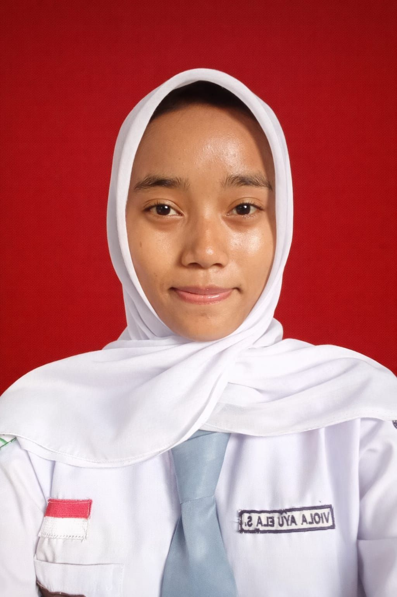

Halo Semua 👋, Saya
Portofolio ini menampilkan deretan proyek dan kontribusi saya sebagai siswa SMK Negeri 1 Kaliwungu dalam mengembangkan solusi berbasis teknologi.
Hubungi Saya
PROFIL
Saya adalah siswa SMK Negeri 1 Kaliwungu dari jurusan Teknik Jaringan Komputer dan Telekomunikasi (TJKT).
Saya tertarik pada dunia teknologi, khususnya jaringan komputer, keamanan jaringan, fiber optic, serta pengembangan website.
Selama belajar di SMK, saya mengembangkan kemampuan melalui berbagai praktik dan proyek. Saya juga memiliki ketertarikan pada desain dan proyek kreatif berbasis digital.
PROJECT
Beberapa proyek dan hasil pembelajaran yang saya kerjakan selama menempuh pendidikan di bidang TJKT.
Dokumentasi pembelajaran mengenai keamanan jaringan, analisis ancaman, vulnerability, kontrol akses, serta penerapan keamanan dalam jaringan.
Lihat Proyek →Dokumentasi pembelajaran dan praktik fiber optic, mulai dari pengenalan teknologi hingga penyambungan dan pengujian kabel.
Lihat Proyek →EDUCATION
Pendidikan Sekolah Dasar
Pendidikan Sekolah Menengah Pertama
Teknik Jaringan Komputer dan Telekomunikasi (TJKT)
Fokus pembelajaran: jaringan komputer, keamanan jaringan, fiber optic, MikroTik, Cisco Packet Tracer, dan teknologi jaringan.
EXPERIENCE
Pengalaman belajar dan praktik yang saya dapatkan selama menempuh pendidikan di bidang TJKT.
Praktik konfigurasi dan pembangunan jaringan menggunakan router, switch, access point, dan perangkat jaringan lainnya.
Mempelajari konsep keamanan jaringan, analisis ancaman, vulnerability, dan kontrol akses.
Mempelajari teknologi fiber optic serta praktik penyambungan dan pengujian kabel.
Membuat dan mengembangkan website sebagai bagian dari pembelajaran dan proyek digital.
Mengembangkan proyek kreatif Adeva Fashion yang menggabungkan desain, branding, fashion, dan media digital.
BLOG
Catatan pembelajaran dan pengalaman saya seputar teknologi dan dunia TJKT.
Penjelasan sederhana mengenai keamanan jaringan dan pentingnya melindungi data.
Baca Artikel →Pengertian, cara kerja, kelebihan, dan penggunaan fiber optic dalam jaringan.
Baca Artikel →Mengenal MikroTik dan perannya dalam membangun serta mengatur jaringan komputer.
Baca Artikel →Cerita dan pengalaman belajar jaringan komputer selama menjadi siswa jurusan TJKT.
Baca Artikel →CONTACT
Jika ingin menghubungi saya, silakan melalui kontak berikut.
Rejomulyo, Desa Candi
Kec. Ampel, Kab. Semarang
Jawa Tengah